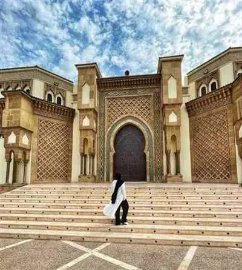
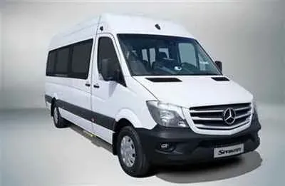

Master the art of bargaining, find quality argan products, and navigate the largest market in North Africa.
Souk El Had is the beating heart of Agadir. Spanning over 13 hectares and featuring 12 gates and more than 6,000 individual stalls, it is the largest urban market in North Africa. For a cruise passenger, it can be both incredibly exciting and slightly overwhelming. Here is our insider guide to navigating the souk like a local.
Because of its size, getting lost is part of the experience. However, knowing the gates helps you keep your bearings:

Bargaining is a fundamental part of shopping in Moroccan souks. The initial price quoted is almost always double or triple what the vendor expects to receive:

Agadir and the surrounding Souss valley are the native home of the argan tree. Souk El Had is packed with stalls selling cosmetic and culinary argan oil.
If you want to take home a piece of Morocco, we recommend looking out for: